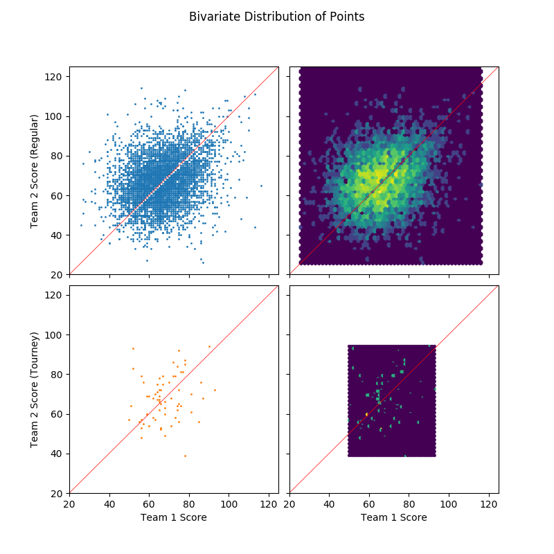
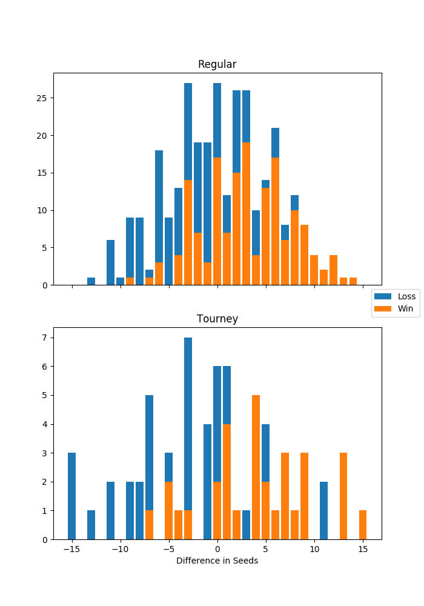
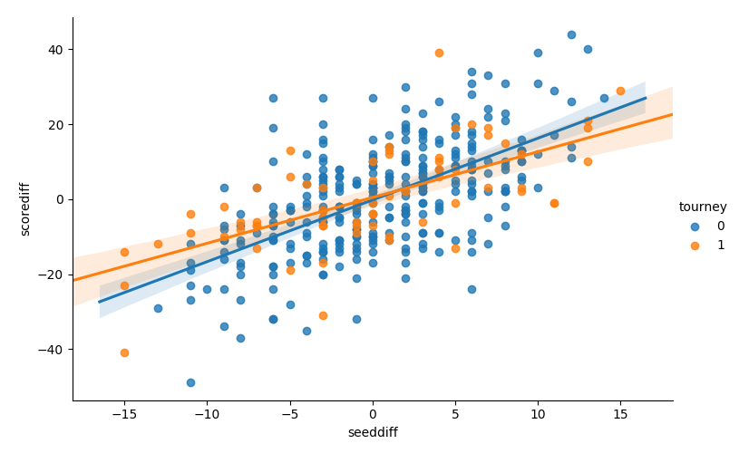
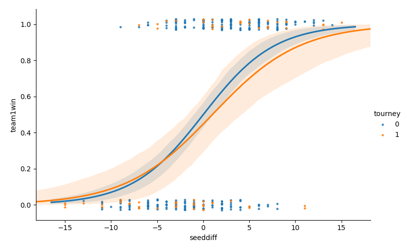
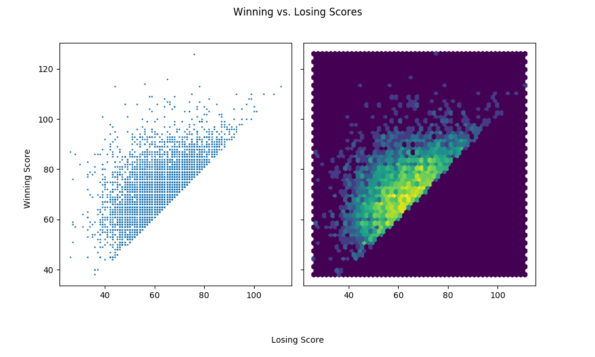
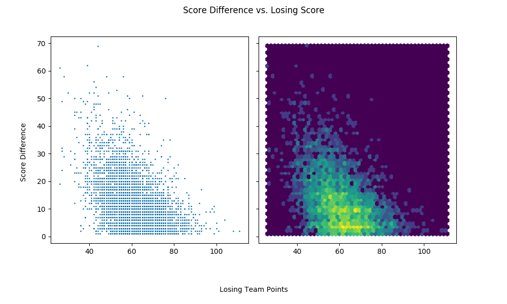

Here we explore the data from 2015 season. 2015 was chosen arbitrarily among recent years. There's a few reasons for visualizing a single season at a time.
It reflects my general modeling approach: Stay simple until there are reasons not to.
Our main goal is to predict the outcomes of the 2019 tournament. Regular season results from 2019 season might help us with this prediction, but it's not clear what information can be gained from previous seasons, given that the roster goes through a significant change each season. For instance, what can we actually learn from the 2000 season that can help us predict the outcomes of the 2019 tournament? Not that useful information can't be shared across seasons, but we'll explore the incremental benefits of using larger datasets and more complicated models.
Focusing on a single season at a time helps us retain simplicity and interpretability. The goal, of course, is to expand our models, and we'll do that in a way that helps us gain insight about the problem domain.
import pandas as pd import numpy as np from matplotlib import pyplot as plt import seaborn as sns from tabulate import tabulate from src import utils # see src/ folder in project repo from src.data import make_dataset
print_df = utils.create_print_df_fcn(tablefmt='html'); show_fig = utils.create_show_fig_fcn(img_dir='eda/eda_2015/');
data = make_dataset.get_train_data_v1(season=2015) # difference in scores data['scorediff'] = data['score1'] - data['score2'] # winning and losing scores data['score_w'] = np.where(data.team1win == 1, data.score1, data.score2) data['score_l'] = np.where(data.team1win == 0, data.score1, data.score2) print('Data size = {}'.format(data.shape)) print_df(data.head())
| season | daynum | numot | tourney | team1 | team2 | score1 | score2 | loc | team1win | seed1 | seednum1 | seed2 | seednum2 | seeddiff | ID | scorediff | score_w | score_l | |
|---|---|---|---|---|---|---|---|---|---|---|---|---|---|---|---|---|---|---|---|
| 0 | 2015 | 11 | 0 | 0 | 1103 | 1420 | 74 | 57 | 1103 | 1 | nan | nan | nan | nan | nan | 2015_1103_1420 | 17 | 74 | 57 |
| 1 | 2015 | 11 | 0 | 0 | 1104 | 1406 | 82 | 54 | 1104 | 1 | nan | nan | nan | nan | nan | 2015_1104_1406 | 28 | 82 | 54 |
| 2 | 2015 | 11 | 0 | 0 | 1112 | 1291 | 78 | 55 | 1112 | 1 | Z02 | 2 | nan | nan | nan | 2015_1112_1291 | 23 | 78 | 55 |
| 3 | 2015 | 11 | 0 | 0 | 1113 | 1152 | 86 | 50 | 1113 | 1 | nan | nan | nan | nan | nan | 2015_1113_1152 | 36 | 86 | 50 |
| 4 | 2015 | 11 | 0 | 0 | 1102 | 1119 | 78 | 84 | 1119 | 0 | nan | nan | nan | nan | nan | 2015_1102_1119 | -6 | 84 | 78 |
n_missing = data.isna().sum().rename('n_missing') print_df(data.describe().append(n_missing))
| season | daynum | numot | tourney | team1 | team2 | score1 | score2 | team1win | seednum1 | seednum2 | seeddiff | scorediff | score_w | score_l | ID | loc | seed1 | seed2 | |
|---|---|---|---|---|---|---|---|---|---|---|---|---|---|---|---|---|---|---|---|
| count | 5421 | 5421 | 5421 | 5421 | 5421 | 5421 | 5421 | 5421 | 5421 | 1166 | 1161 | 376 | 5421 | 5421 | 5421 | nan | nan | nan | nan |
| mean | 2015 | 71.5853 | 0.0791367 | 0.0123593 | 1224.32 | 1343.95 | 66.3785 | 67.3331 | 0.472607 | 8.57719 | 8.62532 | 0.361702 | -0.954621 | 72.6838 | 61.0279 | nan | nan | nan | nan |
| std | 0 | 36.0027 | 0.326858 | 0.110494 | 85.1581 | 84.8386 | 12.0862 | 11.9573 | 0.499295 | 4.77696 | 4.60865 | 5.70773 | 14.6983 | 10.541 | 10.5097 | nan | nan | nan | nan |
| min | 2015 | 11 | 0 | 0 | 1101 | 1106 | 26 | 26 | 0 | 1 | 1 | -15 | -62 | 38 | 26 | nan | nan | nan | nan |
| 25% | 2015 | 40 | 0 | 0 | 1154 | 1285 | 58 | 59 | 0 | 4 | 5 | -3 | -10 | 65 | 54 | nan | nan | nan | nan |
| 50% | 2015 | 74 | 0 | 0 | 1210 | 1359 | 66 | 67 | 0 | 9 | 9 | 0 | -2 | 72 | 61 | nan | nan | nan | nan |
| 75% | 2015 | 103 | 0 | 0 | 1281 | 1414 | 74 | 75 | 1 | 13 | 12 | 4 | 9 | 79 | 68 | nan | nan | nan | nan |
| max | 2015 | 154 | 4 | 1 | 1460 | 1464 | 116 | 126 | 1 | 16 | 16 | 15 | 69 | 126 | 111 | nan | nan | nan | nan |
| n_missing | 0 | 0 | 0 | 0 | 0 | 0 | 0 | 0 | 0 | 4255 | 4260 | 5045 | 0 | 0 | 0 | 0 | 0 | 4255 | 4260 |
fig, axes = plt.subplots(2, 2, figsize=(8, 8), sharex=True, sharey=True) for i, (is_tourney, df) in enumerate(data.groupby('tourney')): color = '#1f77b4' if is_tourney == 0 else '#ff7f0e' axes[i,0].scatter(df.score1, df.score2, s=1, c=color) axes[i,1].hexbin(df.score1, df.score2, bins='log', gridsize=50) lims = [20, 125] axes[i,0].set_ylabel('Team 2 Score ({})'.format('Regular' if is_tourney == 0 else 'Tourney')) axes[i,1].set_xlim(lims) axes[i,1].set_ylim(lims) for j in range(2): axes[i,j].plot(lims, lims, c='r', lw=0.5) axes[1,0].set_xlabel('Team 1 Score') axes[1,1].set_xlabel('Team 1 Score') plt.subplots_adjust(left=None, bottom=None, right=None, top=None, wspace=0.05, hspace=0.05) plt.suptitle('Bivariate Distribution of Points') show_fig('scatter_points.png')

An initial look at the distribution of points scored by team 1 (with lower ID) and team 2 (with higher ID). As expected, there's nothing special here which means that team IDs are probably assigned arbitrarily.
df_tmp = data.groupby(['tourney', 'seeddiff'])['team1win'].agg(['sum', 'size']).reset_index() fig, axes = plt.subplots(2, 1, figsize = (7, 10), sharex=True) for i, (is_tourney, df) in enumerate(df_tmp.groupby('tourney')): axes[i].bar(df.seeddiff, df['size'], label='Loss') axes[i].bar(df.seeddiff, df['sum'], label='Win') axes[i].set_title('Regular' if is_tourney == 0 else 'Tourney') axes[1].set_xlabel('Difference in Seeds') handles, labels = axes[0].get_legend_handles_labels() fig.legend(handles, labels, loc='right') show_fig('bar_win_by_seeddiff.png')

This figure shows the result of the games between seeded teams. Win, loss, and difference in seeds are from the perspective of team 1, or the team with the lower ID. For example, there were 3 tournament games in which team 1 was the underdog by 15 seed points, and all resulted in a loss. There were also two upsets in the tournament in which teams who had 11 seed point advantage lost the game.
sns.lmplot(x='seeddiff', y='scorediff', hue='tourney', data=data, aspect=1.5) show_fig('scatter_scorediff_by_seeddiff.png')

There isn't a huge difference, but the slope between scorediff and
seeddiff is less steep for the tournament games. This means that the
games tend to be closer in the tournament than regular season,
controlling for the difference in seeds. The difference in slopes
might be used to quantify the increase in competitiveness in the
tournament.
sns.lmplot(x='seeddiff', y='team1win', hue='tourney', data=data, scatter_kws={"s": 5}, y_jitter=0.03, logistic=True, aspect=1.5) show_fig('scatter_win_by_seeddiff.png')

Similar result here as above, but for the logistic regression curve. The difference in seeds has less impact on the winning probabilities in the tournament than during regular season.
fig, axes = plt.subplots(1, 2, sharex=True, sharey=True, figsize=(10, 6)) axes[0].scatter(data['score_l'], data['score_w'], s=1) axes[1].hexbin(data['score_l'], data['score_w'], bins='log', gridsize=50) plt.subplots_adjust(left=0.1, bottom=0.2, right=None, top=None, wspace=0.05, hspace=None) plt.suptitle('Winning vs. Losing Scores') fig.text(0.5, 0.04, 'Losing Score', ha='center') fig.text(0.04, 0.5, 'Winning Score', va='center', rotation='vertical') show_fig('scatter_winscore_by_losescore.png')

When the losing team scores high, the games are more competitive in a sense that there's less score difference. This is intuitive because there's a soft threshold for the total points scored in a game due to the play-clock.
fig, axes = plt.subplots(1, 2, sharex=True, sharey=True, figsize=(10, 6)) axes[0].scatter(data['score_l'], data['scorediff'].abs(), s=1) axes[1].hexbin(data['score_l'], data['scorediff'].abs(), bins='log', gridsize=50) plt.subplots_adjust(left=0.1, bottom=0.2, right=None, top=None, wspace=0.05, hspace=None) plt.suptitle('Score Difference vs. Losing Score') fig.text(0.5, 0.04, 'Losing Team Points', ha='center') fig.text(0.04, 0.5, 'Score Difference', va='center', rotation='vertical') show_fig('scatter_scorediff_by_losingpoints.png')

This plot shows the same information as the previous one.
num_encounters = data.groupby(['team1', 'team2']).size().value_counts() print_df(pd.DataFrame({'num_encounters':num_encounters.index, 'count': num_encounters, 'prop': num_encounters / num_encounters.sum()}) .set_index('num_encounters'))
| num_encounters | count | prop |
|---|---|---|
| 1 | 2464 | 0.642839 |
| 2 | 1150 | 0.300026 |
| 3 | 219 | 0.0571354 |
Only about 30% of all pairs play twice in a season. About 5.7% of all pairs play three times.
tourney_matchups = data.loc[data.tourney == 1] regular_matchups = data.loc[data.tourney == 0] joined_matchups = pd.merge(regular_matchups, tourney_matchups, on=['team1', 'team2'], suffixes=('_regular', '_tourney')) print_df(joined_matchups[['team1', 'team2', 'seednum1_tourney', 'seednum2_tourney', 'team1win_tourney', 'team1win_regular']])
| team1 | team2 | seednum1_tourney | seednum2_tourney | team1win_tourney | team1win_regular | |
|---|---|---|---|---|---|---|
| 0 | 1181 | 1277 | 1 | 7 | 1 | 1 |
| 1 | 1412 | 1417 | 14 | 11 | 0 | 0 |
| 2 | 1181 | 1458 | 1 | 1 | 1 | 1 |
| 3 | 1211 | 1417 | 2 | 11 | 1 | 1 |
| 4 | 1257 | 1301 | 4 | 8 | 1 | 0 |
In 2015, there's only five regular season games between two teams that played in a tournament game. In four out of five cases, the outcome from the tournament agreed with the outcome from the regular season.